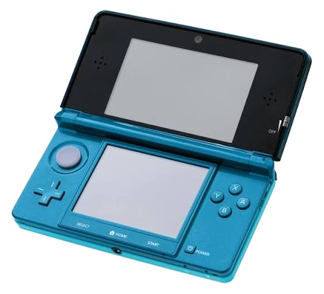
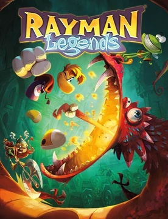
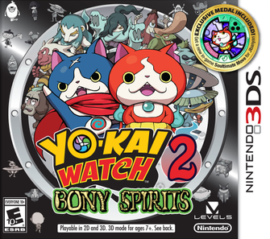

Tempo libero
Progetti personali. Quasi sempre nascono da un’idea piccola e finiscono per diventare uno strumento vero, con qualche funzione in più di quanto servisse.
Quello che faccio quando nessuno guarda. Più o meno sempre.
Scrivo codice che non serve a niente in particolare, perché mi piace capire come funzionano le cose. Ogni tanto rifaccio da zero qualcosa che andava già bene. Sì, lo so.
Progetti personali. Quasi sempre nascono da un’idea piccola e finiscono per diventare uno strumento vero, con qualche funzione in più di quanto servisse.
Interfacce. Colori, spaziature e piccoli movimenti, finché non smettono di darmi fastidio.
Una madrelingua e quattro lingue allenate in momenti diversi, per motivi diversi.
Una domanda tira l’altra. Parto da come funziona qualcosa e finisco per leggere molto più di quanto servisse davvero.
Passa sopra un oggetto per accendere la luce. Garanzie scadute da tempo.


Tra i miei giochi preferiti.

Mi piace tutta la saga, ma il mio preferito è il 2: Bony Spirits.
Mi piacciono tutti, ma è quello a cui sono più affezionato.
Il totale dei commit pubblici attribuiti a @oakvx e @oakvxish, letto in diretta da GitHub.
Si apre una mail già pronta nella lingua che scegli: rispondo nella stessa. Italiano madrelingua, inglese C1, spagnolo B1, greco B1, cinese A2.
Outside work hours I write code with no real purpose, mostly because I like understanding how things work. I use English every day, I put my Spanish to the test living in Seville for a while, and I picked up Greek out of curiosity.
Fuera de horario escribo código que no tiene un propósito concreto, sobre todo porque me gusta entender cómo funcionan las cosas. Uso inglés todos los días, puse a prueba mi español viviendo una temporada en Sevilla, y aprendí griego por curiosidad.
Εκτός ωραρίου γράφω κώδικα χωρίς συγκεκριμένο σκοπό, κυρίως επειδή μου αρέσει να καταλαβαίνω πώς λειτουργούν τα πράγματα. Χρησιμοποιώ αγγλικά κάθε μέρα, δοκίμασα τα ισπανικά μου ζώντας για ένα διάστημα στη Σεβίλλη, και έμαθα ελληνικά από περιέργεια.
ταξίδι
Parto da una domanda semplice su come funziona qualcosa e finisco a leggere molto più del necessario. Oggi è toccato al greco.
(vii) Altrove, dal vivo
Dove pubblico, contato ogni ora da un robot paziente.
Solo conteggi pubblici e contenuti scelti da me. Nessun elenco di follower. Una GitHub Action ricontrolla i profili ogni ora.
Instagram
oakvx @oakvx
—
follower
Apri su InstagramControllo automatico ogni orain attesa del primo controllo
TikTok
oakvx.sh @oakvx.sh
—
follower
Apri su TikTokControllo automatico ogni orain attesa del primo controllo